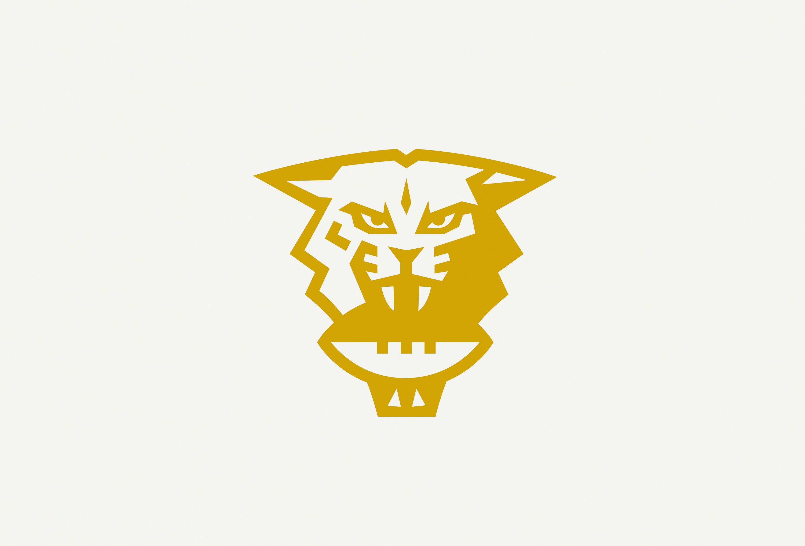
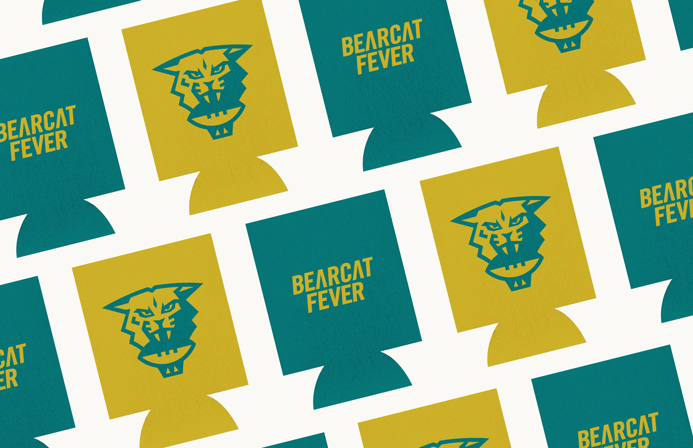

BEARCAT FEVER
A personal project exploring the visual identity of a fantasy football league, began in 2009 with friends from high school. As the proud commissioner, I relish the opportunity to bring a highly personalized approach to writing and reporting on the league, in the form of a weekly mobile recap. In addition to designing a logo and an icon, I explored the ways the brand would come to life in print and digital applications.



